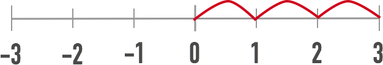

SQL allows you to use basic operators like +, *, > (and so forth) to add, multiply, subtract, divide, and compare quantitative data.
But it also gives you less well-known mathematical functions that can save you from having to do a lot of math and code-writing—if you know they exist—and that's what this activity's all about.
THE ABSOLUTE FUNCTION will return the absolute value of any number.
What's an absolute value? Well, it's just the number itself.
On a number line, the number three is three places from zero.
The mathy way to say this is:
|3| = 3|-3| = 3
The programmery way to say it is:
abs(3) = 3abs(-3) = 3
So, why abs?
If you need to figure out the difference between a negative and a positive number, you could just do some quick math, and come up with "the difference between 3 and -3 is 6!"
BUT if you need to do that for a LOT of numbers, and some of them were pretty huge, that's where ABS comes in handy!
To answer this question, we need to subtract budget from gross, then, if the value returned is negative, ABS out the difference.
But how do you check whether or not the difference between budget and gross was a positive or negative number? With the SIGNUM FUNCTION.
The signum function—or just SIGN function, for short—finds the sign of a number for you.
When you say, "hey function, what's this number's sign?" it can answer in only three ways: positive (which it returns as +1), negative (-1), or zero (0).
Zero! We forgot about that in our original stab at a solution. So let's rephrase:
To find out the biggest blockbuster bust, and how much it lost, we need to subtract budget from gross, then, if the value returned is negative or zero, ABS out the difference.
Here's another odd-yet-frequently-useful math function: MODULO.
Please click here to head back to the Circuits platform.